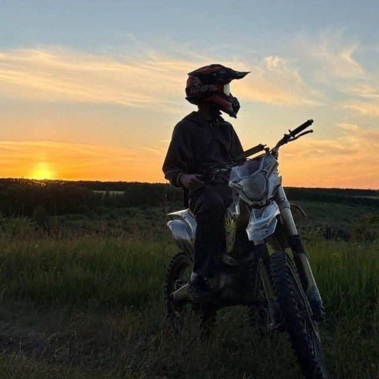

online · где-то за городом
sonder
пока гаснет закат —
дорога ещё открыта.
дорога ещё открыта.
люблю тёплый свет позднего вечера,
пустые дороги и людей рядом.
остальное — по пути.
пустые дороги и людей рядом.
остальное — по пути.

